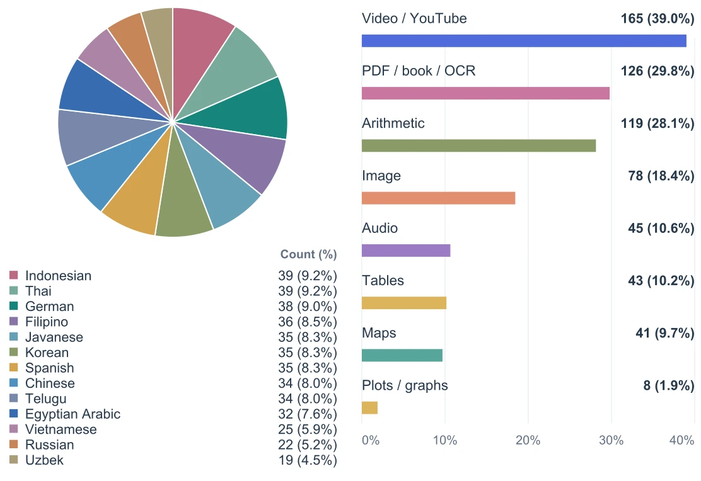

01 Information retrieval
HyperBrowseCompA Multilingual and Multimodal Stress Test for Web-Browsing Agents
arXiv preprint · 2026
How well can an agent find a fact buried on the open web? HyperBrowseComp tests 423 human-validated questions in 13 languages, with evidence that can span maps, video, images, and scanned documents.

